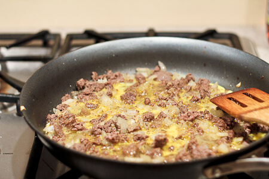

Mush

MUUUUUUUUUSH
It is mush. Put whatever proteins you want, slap some eggs on it, and there you have mush.
Since it is mush, taste does not matter just down it within 3 minutes maximum.
Ingredients
- eggs
- beef (or whatever meat(s) you want)
- cheese
- butter or cocunut milk
- if you want: seeds / nuts
Steps
- put butter or cocunut milk on pan and heat up
- put meat on pan and fully cook it, stir it also
- add cheese, stir to make the cheese spread
- add whatever seeds or other goodies you want
- stop cooking and eat it